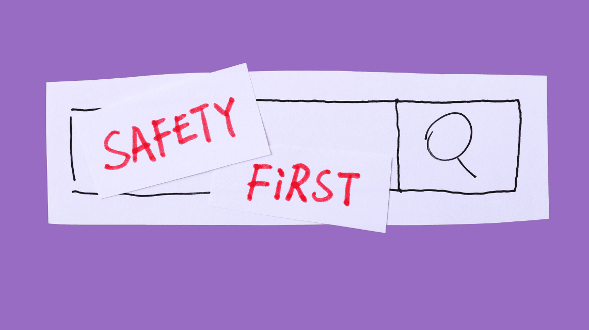
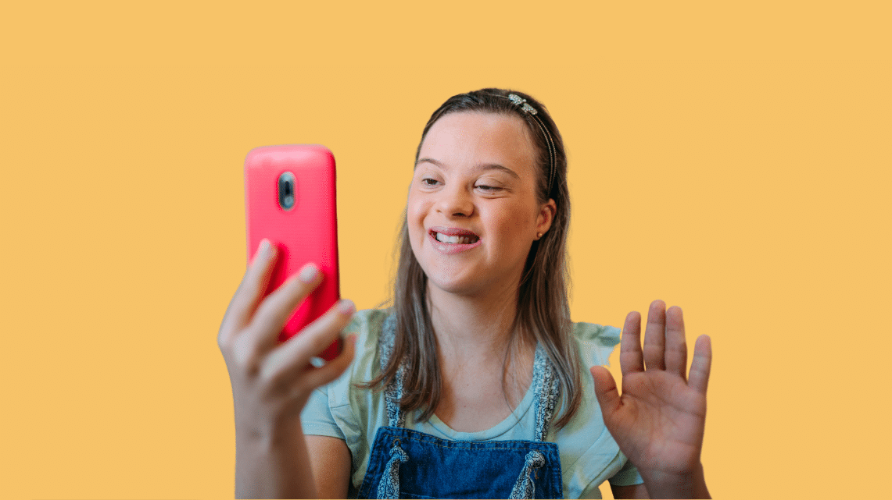

Staying Safe Online
Cyber safety involves protecting yourself from potential risks online. An understanding of the harms of the internet means you're less likely to jeopardise your own personal information or well-being. Adopting internet/cyber safety measures means you can enjoy the internet without putting yourself at risk.
Any device capable of connecting to the internet requires that we take internet safety measures.
What can happen?
With all your devices – phones, computers, tablets, smartwatches, smart TVs, etc. – it's good practice to use passwords or passcodes and other
security options like fingerprint readers or face-scanning technology. These measures will reduce the likelihood of a cyberattack or your personal data being stolen by hackers.
Strangers on the internet can try to take advantage of children’s vulnerability, and this can lead to harmful situations both online and in real life. Parents and teachers should
regularly talk to children about whom they speak to on the internet.
Similarly, children who are contacted by a stranger or come across anything that makes them feel uncomfortable or seems untoward should immediately report it to an adult.
As technology expands, so does the threat to safety of anyone who uses the internet. This is especially present in children, as they are more easily impacted by what they see online.
They are often also unaware of the dangers posed by using the internet, and this can lead to consequences if not handled correctly.

What can you do?
1. Keep it locked.
Ask someone to help you set up a PIN or password to protect your phone, laptop and other devices. Do the same for all your accounts to protect any information about you that has been shared in them.
2. Keep it private.
Don’t tell people personal information like your address and phone number. Find out how to keep your profiles on social media private so only people you want to can see what you share.
3. Keep it to yourself.
Everything you do online leaves what’s known as a digital footprint. This is a record of what you do and say. Think very carefully before you say or post anything. You won’t be able to stop other people sharing it – even those you don’t know.
4. Keep it real.
Sometimes, people pretend to be someone else online. Check anyone who makes friends with you online is who they say they are. If you aren’t sure, ask someone you know to help you find out.
